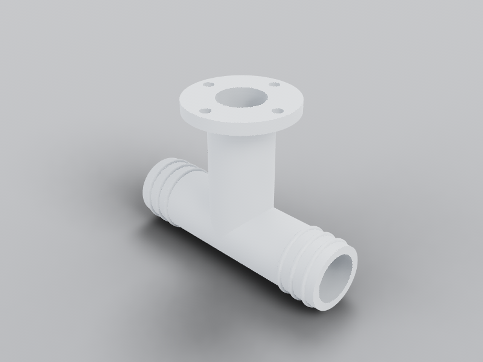
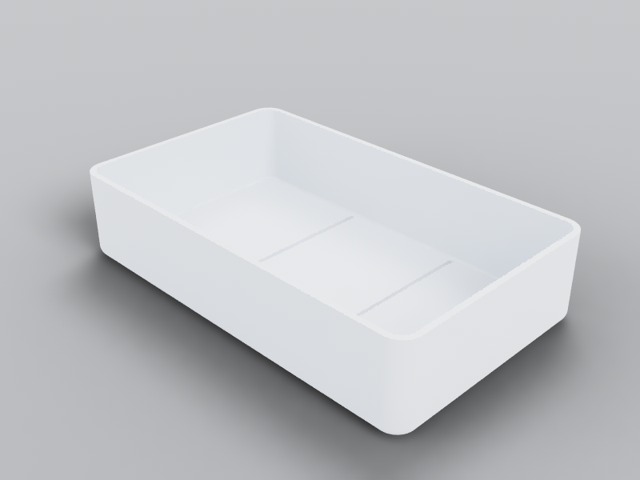
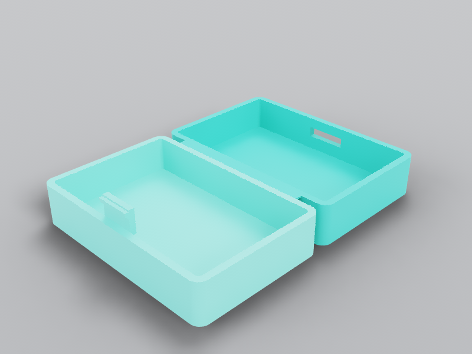
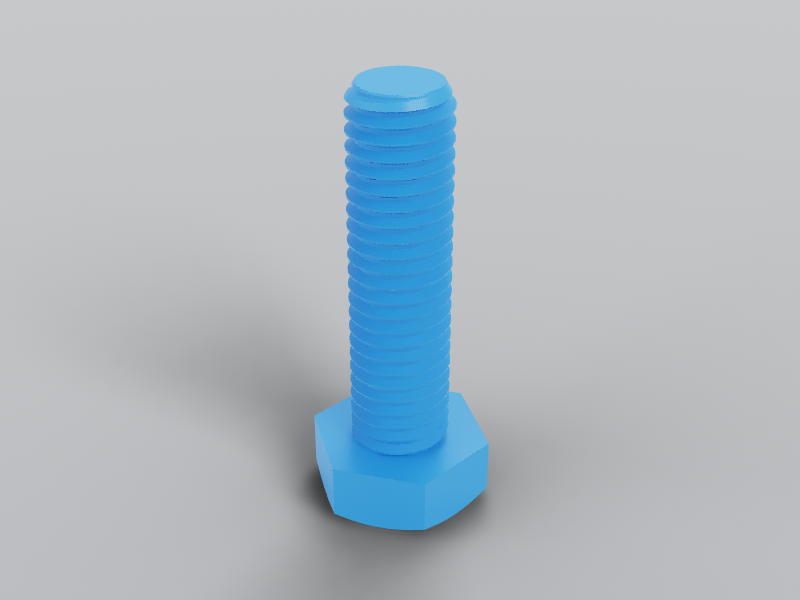

Gallery: prompts → models
Each card is a prompt given to an agent that read only the cad skill, and the model it wrote. Open one for its source, or in the playground to change it.

“Parametric NEMA 17 motor mount with slotted holes”
A parametric NEMA 17 motor mount: an L bracket whose upright takes the motor (22 mm pilot, four M3 slots on the 31 mm square so the belt can be tensioned) and whose base bolts down…
examples/dogfood/01-nema17-mount.ts
“Pipe tee with threads-ish ribs and a flange”
A pipe tee: a run along X and a branch up Z, 32 mm OD / 24 mm bore, barbed ribs at both run ends (grip for a hose) and a 4-bolt flange on the branch.
examples/dogfood/02-pipe-tee.ts
“Phone stand, adjustable angle (param), cable cut-out”
A phone stand: a side profile extruded to width. The phone leans back at `angle` degrees from vertical on a lipped ledge; a cable slot runs through the ledge and the back for a cha…
examples/dogfood/03-phone-stand.ts
“Desk-organiser tray with fillets and dividers (assembly)”
A desk organiser: a filleted open tray with two grooves across its floor, two loose dividers that drop into them, and a round pen cup standing in one bay. An assembly of four parts…
examples/dogfood/04-desk-tray.ts
“Sprocket from a polar pattern + hub + keyway”
A roller-chain sprocket (08B, 12.7 mm pitch): roller seats cut round a disc by a polar pattern, a hub on one side, a 12 mm bore with a 4 mm keyway and an M5 set-screw hole through …
examples/dogfood/05-sprocket.ts
“Snap-fit enclosure, living-hinge lid (joint), printable without supports”
A clamshell box printed in one piece, open, without supports: two shallow trays side by side joined at their rims by a 0.5 mm living hinge (a 2 mm bridge), folding 180 degrees clos…
examples/dogfood/06-living-hinge-box.ts
“Laser-cut sheet bracket with bend notes (2D → DXF, sheet DFM)”
A laser-cut and bent 2 mm steel Z bracket: the bent part (to check as sheet metal) and its flat blank on z = 0 (to export as DXF), the blank's length from the bend allowance, with …
examples/dogfood/07-sheet-bracket.ts
“Robot gripper: two fingers on prismatic joints, poses, ranges, URDF”
A parallel gripper: a palm block on a mounting flange, two fingers on prismatic joints sliding toward each other along X, coupled so one value drives both. Poses open and closed; f…
examples/dogfood/08-gripper.ts“A small sensor breakout board with I2C pull-ups (pcb skill)”
A BME280 sensor breakout: the sensor in I2C mode (CSB high, SDO low: address 0x76), 4.7k pull-ups on SDA and SCL, 100n decoupling, a 4-pin 2.54 mm header (3V3, GND, SDA, SCL). 20 x…
examples/dogfood/09-bme280-breakout.ts
10-printed-bolt
An M8 x 30 hex bolt with a modelled thread, standing on its head to print (the parts library). Check: cad model dfm "$ID" --process printing --material petg
examples/dogfood/10-printed-bolt.tsEight prompts modelled the way the cad skill teaches, by an agent reading only skills/cad/SKILL.md
and its references: write examples/dogfood/NN-name.ts, cad run, inspect, snapshot and look,
run the checks the prompt implies (interference, dfm, ranges), export. Each row records what
happened, what made it harder than it should be, and the fix (or the bug sent to its owner).
2026-11-23, OCCT unless noted; every model then built on all three kernels (below).
#The prompts
| # | Prompt | Model | Result | Checks |
|---|---|---|---|---|
| 1 | Parametric NEMA 17 motor mount with slotted holes | 01-nema17-mount.ts | L bracket, 22 mm pilot slot, four M3 slots on the 31 mm square, two M5 base slots, inside fillet by sel.near | dfm cnc --tools 3,6: OK, 1 warning; STEP + STL exported |
| 2 | Pipe tee with threads-ish ribs and a flange | 02-pipe-tee.ts | run and branch, torus barbs, 4-bolt flange by polarCopies | dfm printing: OK (overhang and horizontal-hole warnings, as expected for a tee); dfm molding: FAILED (no draft, undercuts: true of a tee) |
| 3 | Phone stand, adjustable angle (param), cable cut-out | 03-phone-stand.ts | side profile by polygon on Plane.XZ, angle param, cable drop + exit channel | dfm printing: OK after the sliver fix |
| 4 | Desk-organiser tray with fillets and dividers (assembly) | 04-desk-tray.ts | filleted shelled tray with floor grooves, two dividers and a pen cup | interference: clear after two fixes; dfm printing (tray): OK, 8 warnings; STEP + GLB exported |
| 5 | Sprocket from a polar pattern + hub + keyway | 05-sprocket.ts | 18-tooth 08B sprocket, hub, keyed bore, set-screw | dfm cnc: FAILED on the keyway's 4 sharp corners (true: a keyway is broached or EDM'd) |
| 6 | Snap-fit enclosure, living-hinge lid (joint), printable without supports | 06-living-hinge-box.ts | clamshell of two trays, 0.5 mm hinge strip at the rims, hook with a 45 degree barb into a window | interference open / 45 / 90 / 135 / closed: clear; ranges: -1 .. 171 (the barb meets the wall: the snap); dfm printing --material pp: OK; 3MF exported |
| 7 | Laser-cut sheet bracket with bend notes (2D → DXF, sheet DFM) | 07-sheet-bracket.ts | bent Z bracket (sketch with arcs, midplane extrude) + flat blank from the bend allowance with bend lines as parts | dfm sheet --material steel: OK (after a dfm fix); DXF exported (bend lines not on a layer of their own: engine bug 2) |
| 9 | A small sensor breakout board with I2C pull-ups (pcb skill) | 09-bme280-breakout.ts | BME280 in I2C mode, 4k7 pull-ups, 100n, 4-pin header, 20 x 16 mm; routed by hand on two layers with a GND pour | ERC 0 errors (1 warning: SDO tied to ground beside a power flag), DRC 0 errors after one fix (5 silkscreen warnings), board STEP opened as a model |
| 8 | Robot gripper: two fingers on prismatic joints, poses, ranges, URDF | 08-gripper.ts | palm with flange, coupled fingers, open / closed poses, effort and velocity | interference open / closed: clear; dfm cnc: OK after a dfm fix; ranges: misses the finger-finger clash (engine bug 3); URDF exported and cad urdf validate OK (0.183 kg) |
#Friction and fixes
| # | Friction | Layer | Fix |
|---|---|---|---|
| 1 | No way to turn a 2D profile within its plane (a slot along v); only Plane.turn existed | SDK | Profile.turn(degrees); documented in sdk-modeling; tested |
| 2 | .material("pp") refused: the SDK knew 26 materials, fewer than the manufacturing check and the stress study; "aluminium 6061" refused too | SDK | 16 more presets (pp, pe, pmma, peek, …); a grade after a family's name is kept as written and weighs as the family; documented; tested |
| 3 | shell after a fillet no larger than the wall fails on OCCT as shell failed: shell failed: StdFail_NotDone: doubled, no cause, no fix | engine (message), skill | pitfall added to sdk-modeling; bug 1 sent to engine. solidcore and cadrs build it |
| 4 | Centred primitives: a hole tool translated as if it started at z = 0 cut a blind pocket, silently (the sprocket's seats and bore) | skill | pitfall added: centred by default; check cuts with --display hidden-line |
| 5 | dfm cnc judged a slot's end round against the part's whole extent along its axis (radius to depth 0.04) | cad-dfm | depth is the round's own run; tested |
| 6 | dfm sheet called a bent bracket's broad side faces (its cut outline) "not sheet" | cad-dfm | a broad planar face is a cut edge when every face beside it is the sheet's, square to it; tested |
| 7 | dfm cnc called the edge where a wall stands on a flange a sharp vertical corner | cad-dfm | a floor's edge is judged first (an end mill's end and flank make it) |
| 8 | A hinge with its axis the wrong way reaches the right closed pose through the base; only a mid-travel pose shows it | skill | mechanisms.md: check interference mid-travel, flip dir |
| 9 | A snap fit's barb is a ranges stop short of closed | skill | mechanisms.md: that is the snap, report it |
| 10 | Cuts that nearly meet left 0.01–0.03 mm skins (the tray's grooves through the floor's round, the stand's cable slot under its channel); the printing check found both | skill, models | pitfall added; models fixed |
| 11 | Two dividers overlapped the tray's inside round by 1.2 mm³; interference found it | model | dividers shortened |
| 12 | DXF bend notes: every entity on layer 0 | engine | bug 2, fixed: a layer per part |
| 13 | A bent sheet profile needs hand-computed arc midpoints | – | tangentArcTo covers it; no change |
| 14 | examples/blinky_pcb.ts (needs KiCad) broke the SDK's examples test against a mock server | SDK test | examples that say // Needs … installed are skipped there |
| 15 | PCB routing needs pad positions, which only cad pcb inspect --json gives, in KiCad's frame (y down, offset on the page): each had to be converted to the design's frame by hand | pcb (solidcore-adapter) | sent: give pads in the design frame (from write, or pcb.pads(board)) |
| 16 | A 3V3 track 0.075 mm from a pull-up's pad: DRC found it, the fix was a jog | model | rerouted |
#Bugs sent
| To | Bug | Repro | State |
|---|---|---|---|
| engine | 1. shell failure message doubled and without a cause or fix | a tray filleted <Z 3 then shelled -3 | fixed: one message with cause and fix; OCCT retries the wall 0.1 µm thinner, so the tray builds |
| engine | 2. DXF export writes every entity on layer 0; the original wrote a layer per part | 07-sheet-bracket.ts --export | fixed: a layer per part (BLANK_BEND_1_UP_90); exports.md updated |
| engine | 3. cad model ranges reports a coupled finger pair "clear along the whole extent": moving-vs-moving clashes are not checked | 08-gripper.ts | fixed |
| engine | 4. a run line's hits + misses can be less than its ops (10 ops, 1 hit, 8 misses) | 04-desk-tray.ts | fixed: hits + misses + unused = ops; the SDK's run line adds , N unused |
#Kernels
Every dogfood model on an OCCT, a solidcore and a cadrs server (one cad --features solidcore,cadrs
binary), cad run each:
| model | occt | solidcore | cadrs |
|---|---|---|---|
| nema17_mount | 14503.7 mm³ | same | same |
| pipe_tee | 71328.6 | same | same |
| phone_stand | 207262.9 | same | same |
| desk_tray / desk_organiser | 145187.9 / 172318.1 | same | 145188 / same |
| sprocket | 36097.8 | same | same |
| living_hinge_box | 17210.8 | same | same |
| z_bracket / flat | 7778.9 / face | same | same |
| gripper | 75573.1 | same | same |
The standard-parts library (examples/fasteners.ts, examples/dogfood/10-printed-bolt.ts) builds on
all three too, with equal volumes but for two: the involute gear pair is 28786.2 mm³ on OCCT and 28783.6
on solidcore and cadrs (spline flanks, 9e-5 relative), and the modelled-thread bolt (M8 x 30) is 2006.31 mm³ on all three. The modelled thread was a
ridge fused onto the core and trimmed, which cadrs could not trim; it is now an ISO full-depth groove
cut into a blank (solidcore-adapter's construction), which builds alike everywhere: occt 1.96 s,
solidcore 33.1 s, cadrs 0.46 s (release, cad-kernel-conformance sdk_threads).
All eight build on all three kernels with equal bounds and volumes to the summary's precision. The
one difference found: the tray filleted <Z 3 and shelled -3 (the wall equal to the round) failed
on OCCT (StdFail_NotDone) and built on solidcore and cadrs (147837 mm³). OCCT now retries such a
shell 0.1 µm thinner and builds it too.